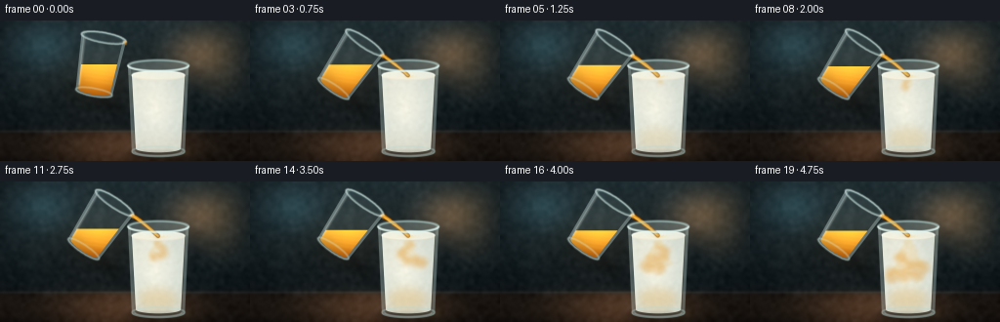
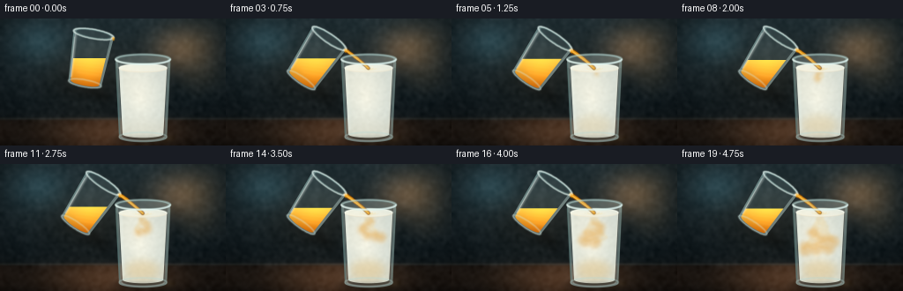
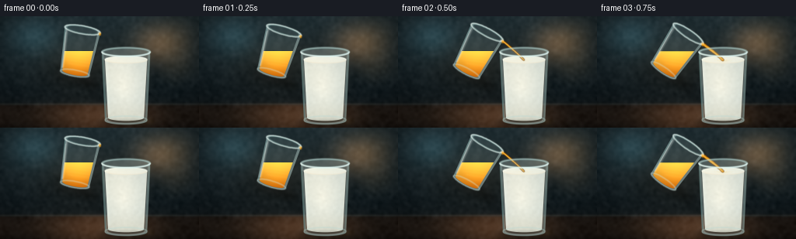
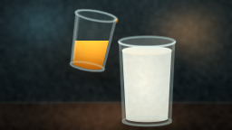
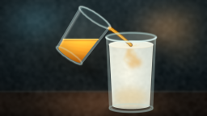
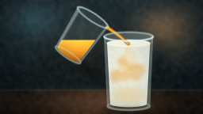
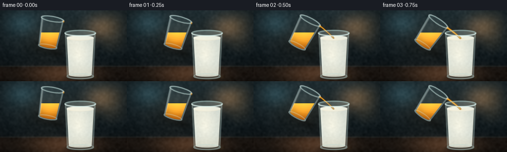
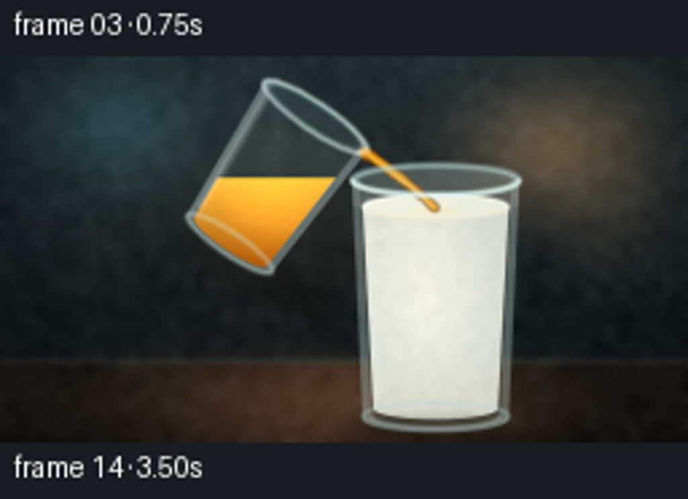
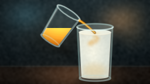
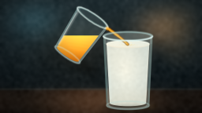

CODING AGENTS AS PIXEL WORLD MODELS
traex/DeepSeek-V4.1-Flash · phygen_137
点击播放 · 原生 RGB 像素
逐轮保存的候选
回放视频、检查图与代码变化。
每份候选均可单独播放。实际图片检查记录在下方工具轨迹中。
候选 01播放与检查图
点击播放 · 原生 RGB 像素

展开代码变化
--- 上一保存版本 +++ 本次保存版本 @@ -0,0 +1,785 @@ +from __future__ import annotations + +import json +import math +from pathlib import Path + +import cv2 +import numpy as np + +import artifact_io + + +ROOT = Path(__file__).resolve().parent +SPEC = json.loads((ROOT / "task_spec.json").read_text()) +W, H = int(SPEC["width"]), int(SPEC["height"]) +N, FPS = int(SPEC["frames"]), float(SPEC["fps"]) +S = 4 +OW, OH = W * S, H * S + + +def rgb(value: tuple[int, int, int]) -> np.ndarray: + return np.asarray(value, dtype=np.float32) + + +def smoothstep(edge0: float, edge1: float, value: np.ndarray) -> np.ndarray: + t = np.clip((value - edge0) / (edge1 - edge0), 0.0, 1.0) + return t * t * (3.0 - 2.0 * t) + + +def composite(image: np.ndarray, color: np.ndarray, alpha: float | np.ndarray, mask: np.ndarray) -> None: + amount = np.asarray(alpha, dtype=np.float32) + if amount.ndim == 2: + amount = amount[:, :, None] + weight = (mask.astype(np.float32) / 255.0)[:, :, None] * amount + image[:] = image * (1.0 - weight) + color * weight + + +def blank_mask() -> np.ndarray: + return np.zeros((OH, OW), dtype=np.uint8) + + +def ellipse_mask(cx: float, cy: float, rx: float, ry: float) -> np.ndarray: + mask = blank_mask() + cv2.ellipse( + mask, + (round(cx * S), round(cy * S)), + (round(rx * S), round(ry * S)), + 0, + 0, + 360, + 255, + -1, + cv2.LINE_AA, + ) + return mask + + +def polygon_mask(points: list[tuple[float, float]]) -> np.ndarray: + mask = blank_mask() + pts = np.round(np.asarray(points, dtype=np.float32) * S).astype(np.int32) + cv2.fillPoly(mask, [pts], 255, cv2.LINE_AA) + return mask + + +def soft(mask: np.ndarray, sigma: float) -> np.ndarray: + return cv2.GaussianBlur(mask, (0, 0), sigmaX=sigma * S, sigmaY=sigma * S) + + +def add_polyline( + image: np.ndarray, + points: np.ndarray, + color: np.ndarray, + alpha: float, + thickness: float, + blur: float = 0.45, +) -> None: + mask = blank_mask() + pts = np.round(points * S).astype(np.int32) + cv2.polylines( + mask, + [pts], + False, + round(255 * alpha), + max(1, round(thickness * S)), + cv2.LINE_AA, + ) + if blur > 0: + mask = soft(mask, blur) + composite(image, color, mask.astype(np.float32) / 255.0, np.full_like(mask, 255)) + + +def add_ellipse_line( + image: np.ndarray, + center: tuple[float, float], + radii: tuple[float, float], + color: np.ndarray, + alpha: float, + thickness: float, + start_angle: float = 0.0, + end_angle: float = 360.0, + blur: float = 0.35, +) -> None: + mask = blank_mask() + cv2.ellipse( + mask, + (round(center[0] * S), round(center[1] * S)), + (round(radii[0] * S), round(radii[1] * S)), + 0, + start_angle, + end_angle, + round(255 * alpha), + max(1, round(thickness * S)), + cv2.LINE_AA, + ) + if blur > 0: + mask = soft(mask, blur) + composite(image, color, mask.astype(np.float32) / 255.0, np.full_like(mask, 255)) + + +def add_gradient_mask( + image: np.ndarray, + mask: np.ndarray, + top: np.ndarray, + bottom: np.ndarray, + alpha: float, +) -> None: + yy = np.linspace(0.0, 1.0, OH, dtype=np.float32)[:, None, None] + color = top[None, None, :] * (1.0 - yy) + bottom[None, None, :] * yy + composite(image, color, alpha, mask) + + +def transform_points( + points: np.ndarray, cx: float, cy: float, angle_deg: float +) -> np.ndarray: + theta = math.radians(angle_deg) + c, s = math.cos(theta), math.sin(theta) + out = np.empty_like(points, dtype=np.float32) + out[:, 0] = cx + points[:, 0] * c - points[:, 1] * s + out[:, 1] = cy + points[:, 0] * s + points[:, 1] * c + return out + + +def rotated_ellipse_points( + cx: float, cy: float, angle_deg: float, ex: float, ey: float, rx: float, ry: float +) -> np.ndarray: + theta = np.linspace(0.0, 2.0 * math.pi, 96, endpoint=False, dtype=np.float32) + local = np.stack([ex + rx * np.cos(theta), ey + ry * np.sin(theta)], axis=1) + return transform_points(local, cx, cy, angle_deg) + + +def make_background() -> np.ndarray: + yy, xx = np.mgrid[0:OH, 0:OW].astype(np.float32) + xn = xx / (OW - 1) + yn = yy / (OH - 1) + + top = rgb((31, 45, 50)) + bottom = rgb((8, 14, 17)) + image = top[None, None, :] * (1.0 - yn[:, :, None]) + bottom[None, None, :] * yn[:, :, None] + + # A warm window and soft bokeh keep the dark background from reading as a flat void. + glow = np.exp(-(((xn - 0.80) / 0.22) ** 2 + ((yn - 0.24) / 0.30) ** 2) * 3.2) + image += glow[:, :, None] * rgb((74, 47, 24))[None, None, :] + cool_glow = np.exp(-(((xn - 0.17) / 0.25) ** 2 + ((yn - 0.18) / 0.34) ** 2) * 4.0) + image += cool_glow[:, :, None] * rgb((16, 31, 35))[None, None, :] + + window = blank_mask() + cv2.rectangle( + window, + (round(0.815 * OW), round(0.055 * OH)), + (round(0.965 * OW), round(0.53 * OH)), + 255, + -1, + ) + window = soft(window, 9.0) + composite(image, rgb((112, 91, 60)), 0.20, window) + + # Faint cabinet seams. + for x in (0.135, 0.405, 0.665): + seam = blank_mask() + cv2.line( + seam, + (round(x * OW), 0), + (round((x + 0.003) * OW), round(0.78 * OH)), + 255, + max(1, round(0.7 * S)), + cv2.LINE_AA, + ) + seam = soft(seam, 2.2) + composite(image, rgb((83, 102, 106)), 0.12, seam) + + bokeh = blank_mask() + rng = np.random.default_rng(137) + for _ in range(18): + bx = rng.uniform(0.56, 0.97) + by = rng.uniform(0.05, 0.63) + radius = rng.uniform(0.006, 0.025) + value = rng.uniform(90, 210) + cv2.circle( + bokeh, + (round(bx * OW), round(by * OH)), + max(2, round(radius * OW)), + (value, value * 0.72, value * 0.45), + -1, + cv2.LINE_AA, + ) + bokeh = soft(bokeh, 5.5) + composite(image, rgb((122, 99, 62)), 0.16, bokeh) + + # Glossy countertop with a soft horizon. + table_weight = smoothstep(0.765, 0.815, yn) + table = rgb((36, 31, 27))[None, None, :] * (1.0 - yn[:, :, None] * 0.58) + table += rgb((31, 18, 10))[None, None, :] * (0.5 + 0.5 * np.cos((xn - 0.5) * 8.0))[:, :, None] + image = image * (1.0 - table_weight[:, :, None]) + table * table_weight[:, :, None] + horizon = np.exp(-((yn - 0.79) / 0.010) ** 2) + image += horizon[:, :, None] * rgb((62, 75, 74))[None, None, :] * 0.16 + + counter_sheen = np.exp(-((yn - 0.91) / 0.13) ** 2) * np.exp(-((xn - 0.48) / 0.48) ** 2) + image += counter_sheen[:, :, None] * rgb((30, 21, 14))[None, None, :] + + # Low-frequency surface texture. + small = rng.normal(0.0, 1.0, (OH // 8, OW // 8)).astype(np.float32) + texture = cv2.resize(small, (OW, OH), interpolation=cv2.INTER_CUBIC) + texture = cv2.GaussianBlur(texture, (0, 0), 7.0) + texture /= max(1e-5, float(np.std(texture))) + image += texture[:, :, None] * 2.4 + + # Vignette. + radius = np.sqrt(((xn - 0.5) / 0.62) ** 2 + ((yn - 0.49) / 0.68) ** 2) + vignette = np.clip((radius - 0.56) / 0.55, 0.0, 1.0) ** 1.6 + image *= (1.0 - 0.38 * vignette)[:, :, None] + return np.clip(image, 0.0, 255.0) + + +def receiving_glass_masks( + center_x: float, top_y: float, bottom_y: float, top_rx: float, bottom_rx: float +) -> tuple[np.ndarray, np.ndarray]: + outer = polygon_mask( + [ + (center_x - top_rx, top_y), + (center_x - bottom_rx, bottom_y), + (center_x + bottom_rx, bottom_y), + (center_x + top_rx, top_y), + ] + ) + outer = cv2.bitwise_or(outer, ellipse_mask(center_x, top_y, top_rx, 5.6)) + outer = cv2.bitwise_or(outer, ellipse_mask(center_x, bottom_y, bottom_rx, 5.0)) + + inner = polygon_mask( + [ + (center_x - top_rx + 3.0, top_y + 1.5), + (center_x - bottom_rx + 3.0, bottom_y - 1.2), + (center_x + bottom_rx - 3.0, bottom_y - 1.2), + (center_x + top_rx - 3.0, top_y + 1.5), + ] + ) + inner = cv2.bitwise_or(inner, ellipse_mask(center_x, top_y, top_rx - 3.0, 4.8)) + inner = cv2.bitwise_or(inner, ellipse_mask(center_x, bottom_y - 1.0, bottom_rx - 3.0, 4.2)) + return outer, inner + + +def milk_masks( + center_x: float, + surface_y: float, + bottom_y: float, + surface_rx: float, + bottom_rx: float, +) -> np.ndarray: + body = polygon_mask( + [ + (center_x - surface_rx, surface_y), + (center_x - bottom_rx, bottom_y), + (center_x + bottom_rx, bottom_y), + (center_x + surface_rx, surface_y), + ] + ) + body = cv2.bitwise_or(body, ellipse_mask(center_x, surface_y, surface_rx, 4.4)) + body = cv2.bitwise_or(body, ellipse_mask(center_x, bottom_y, bottom_rx, 4.0)) + return body + + +def render_milk( + image: np.ndarray, frame_index: int, center_x: float, surface_y: float, bottom_y: float +) -> None: + surface_rx = 27.0 + bottom_rx = 23.0 + fluid = milk_masks(center_x, surface_y, bottom_y, surface_rx, bottom_rx) + + yy, xx = np.mgrid[0:OH, 0:OW].astype(np.float32) + xb, yb = xx / S, yy / S + radial = np.sqrt(((xb - (center_x - 3.0)) / 35.0) ** 2 + ((yb - 91.0) / 58.0) ** 2) + center_milk = rgb((247, 244, 228)) + edge_milk = rgb((176, 190, 188)) + blend = np.clip(radial, 0.0, 1.0)[:, :, None] + milk_color = center_milk[None, None, :] * (1.0 - 0.55 * blend) + edge_milk[None, None, :] * (0.55 * blend) + + warm_foot = smoothstep(104.0, 131.0, yb)[:, :, None] + milk_color = milk_color * (1.0 - 0.24 * warm_foot) + rgb((225, 205, 170))[None, None, :] * (0.24 * warm_foot) + + rng = np.random.default_rng(311) + noise = rng.normal(0.0, 1.0, (OH // 7, OW // 7)).astype(np.float32) + noise = cv2.resize(noise, (OW, OH), interpolation=cv2.INTER_CUBIC) + noise = cv2.GaussianBlur(noise, (0, 0), 5.0) + noise /= max(1e-5, float(np.std(noise))) + milk_color += noise[:, :, None] * 1.7 + composite(image, milk_color, 1.0, fluid) + + # Honey plumes sink and curl through the denser milk. + ribbons = blank_mask() + particles = blank_mask() + t = frame_index / max(1.0, N - 1.0) + for ribbon_index in range(9): + birth = 3.0 + ribbon_index * 1.15 + age = frame_index - birth + if age < 0.0: + continue + trail = [] + for tau in np.linspace(0.0, age, max(4, int(age * 4.0) + 2)): + px = center_x + math.sin(tau * 0.72 + ribbon_index * 1.63) * (0.8 + 1.15 * tau) + px += math.sin(tau * 1.91 + ribbon_index * 0.4) * 0.55 + py = surface_y + 1.6 + tau * (2.45 + 0.18 * (ribbon_index % 3)) + py += math.sin(tau * 0.95 + ribbon_index) * 0.7 + trail.append((px, py)) + pts = np.round(np.asarray(trail, dtype=np.float32) * S).astype(np.int32) + cv2.polylines(ribbons, [pts], False, 255, max(1, round((1.0 + 0.08 * age) * S)), cv2.LINE_AA) + end = pts[-1] + cv2.circle( + particles, + (int(end[0]), int(end[1])), + max(2, round((1.25 + age * 0.42) * S)), + 255, + -1, + cv2.LINE_AA, + ) + ribbons = soft(ribbons, 1.2) + particles = soft(particles, 2.3) + fluid_volume = cv2.bitwise_and(fluid, (yb >= surface_y - 0.8).astype(np.uint8) * 255) + composite(image, rgb((236, 170, 54)), 0.20, cv2.bitwise_and(ribbons, fluid_volume)) + composite(image, rgb((224, 143, 32)), 0.40, cv2.bitwise_and(particles, fluid_volume)) + + # Honey slowly gathers toward the bottom of the glass. + settle = smoothstep(3.0, 14.0, float(frame_index)) + if settle > 0.0: + lower = blank_mask() + cv2.ellipse( + lower, + (round((center_x - 1.0) * S), round(120.0 * S)), + (round(20.0 * S), round(11.0 * S)), + 0, + 0, + 360, + 255, + -1, + cv2.LINE_AA, + ) + lower = soft(lower, 4.8) + composite(image, rgb((232, 165, 55)), 0.12 + 0.16 * settle, cv2.bitwise_and(lower, fluid)) + + # Liquid top and its bright meniscus. + surface = ellipse_mask(center_x, surface_y, surface_rx, 4.4) + surface_color = rgb((253, 249, 231)) + composite(image, surface_color, 0.58, surface) + add_ellipse_line(image, (center_x, surface_y), (surface_rx, 4.4), rgb((255, 255, 242)), 0.68, 1.05) + add_ellipse_line( + image, + (center_x, surface_y + 0.6), + (surface_rx - 1.0, 4.0), + rgb((201, 177, 139)), + 0.26, + 0.7, + 5, + 175, + ) + + # Concentric ripples where the honey lands. + splash_strength = smoothstep(1.0, 4.0, float(frame_index)) + if splash_strength > 0.0: + for ripple in range(3): + phase = (0.72 * frame_index + ripple * 0.34) % 1.0 + rx = 3.0 + phase * 10.0 + ry = 0.8 + phase * 2.5 + alpha = splash_strength * (1.0 - phase) * 0.38 + add_ellipse_line( + image, + (center_x + 0.5, surface_y), + (rx, ry), + rgb((246, 206, 112)), + alpha, + 0.65, + 4, + 176, + blur=0.28, + ) + + # Slight milk splash droplets at the impact point. + if frame_index >= 2: + for drop in range(4): + angle = -1.2 + drop * 0.68 + 0.11 * math.sin(frame_index + drop) + radius = 4.0 + 1.1 * math.sin(0.8 * frame_index + drop * 1.7) ** 2 + dx = center_x + math.cos(angle) * radius + dy = surface_y - 1.0 - abs(math.sin(angle)) * radius * 0.34 + droplet = ellipse_mask(dx, dy, 0.55, 0.75) + composite(image, rgb((255, 244, 215)), 0.55, soft(droplet, 0.25)) + + +def draw_receiving_glass( + image: np.ndarray, center_x: float, top_y: float, surface_y: float, bottom_y: float +) -> None: + top_rx, bottom_rx = 31.0, 27.0 + outer, inner = receiving_glass_masks(center_x, top_y, bottom_y, top_rx, bottom_rx) + wall = cv2.bitwise_and(outer, cv2.bitwise_not(inner)) + above_liquid = cv2.bitwise_and(outer, (np.mgrid[0:OH, 0:OW][0] / S < surface_y).astype(np.uint8) * 255) + + composite(image, rgb((196, 224, 221)), 0.10, outer) + composite(image, rgb((219, 238, 234)), 0.08, above_liquid) + composite(image, rgb((194, 222, 218)), 0.20, wall) + + # Broad cool reflection down the left wall and a narrow warm one on the right. + sheen = blank_mask() + cv2.line( + sheen, + (round((center_x - 25.0) * S), round((top_y + 7.0) * S)), + (round((center_x - 22.0) * S), round((bottom_y - 9.0) * S)), + 255, + round(1.7 * S), + cv2.LINE_AA, + ) + sheen = soft(sheen, 1.1) + composite(image, rgb((235, 250, 246)), 0.31, sheen) + + right_sheen = blank_mask() + cv2.line( + right_sheen, + (round((center_x + 27.0) * S), round((top_y + 10.0) * S)), + (round((center_x + 23.5) * S), round((bottom_y - 11.0) * S)), + 255, + round(0.75 * S), + cv2.LINE_AA, + ) + right_sheen = soft(right_sheen, 1.1) + composite(image, rgb((255, 226, 185)), 0.18, right_sheen) + + # Thick rim: cool back arc and a brighter front arc. + add_ellipse_line(image, (center_x, top_y), (top_rx, 5.6), rgb((178, 213, 210)), 0.50, 1.7) + add_ellipse_line( + image, (center_x, top_y), (top_rx + 0.1, 5.7), rgb((231, 250, 247)), 0.72, 1.25, 0, 180 + ) + add_ellipse_line( + image, (center_x, top_y + 0.5), (top_rx - 3.0, 4.7), rgb((98, 141, 142)), 0.22, 0.55, 180, 360 + ) + + # Base glass and table contact. + add_ellipse_line(image, (center_x, bottom_y - 1.0), (bottom_rx, 5.0), rgb((180, 215, 211)), 0.35, 1.35) + add_ellipse_line( + image, (center_x, bottom_y - 1.0), (bottom_rx - 3.0, 4.2), rgb((235, 249, 243)), 0.35, 0.75, 0, 180 + ) + contact = ellipse_mask(center_x, bottom_y + 2.0, 27.0, 3.0) + contact = soft(contact, 2.0) + composite(image, rgb((5, 8, 8)), 0.22, contact) + + +def cup_masks( + center_x: float, center_y: float, angle: float +) -> tuple[np.ndarray, np.ndarray, np.ndarray]: + top_y, bottom_y = -29.0, 28.0 + top_outer, bottom_outer = 23.0, 19.0 + top_inner, bottom_inner = 19.8, 16.2 + + outer_body = transform_points( + np.asarray( + [ + (-top_outer, top_y), + (-bottom_outer, bottom_y), + (bottom_outer, bottom_y), + (top_outer, top_y), + ], + dtype=np.float32, + ), + center_x, + center_y, + angle, + ) + outer = polygon_mask(outer_body.tolist()) + outer = cv2.bitwise_or( + outer, polygon_mask(rotated_ellipse_points(center_x, center_y, angle, 0, top_y, top_outer, 5.2).tolist()) + ) + outer = cv2.bitwise_or( + outer, + polygon_mask(rotated_ellipse_points(center_x, center_y, angle, 0, bottom_y, bottom_outer, 4.2).tolist()), + ) + + inner_body = transform_points( + np.asarray( + [ + (-top_inner, top_y), + (-bottom_inner, bottom_y - 1.0), + (bottom_inner, bottom_y - 1.0), + (top_inner, top_y), + ], + dtype=np.float32, + ), + center_x, + center_y, + angle, + ) + inner = polygon_mask(inner_body.tolist()) + inner = cv2.bitwise_or( + inner, + polygon_mask(rotated_ellipse_points(center_x, center_y, angle, 0, top_y, top_inner, 4.3).tolist()), + ) + inner = cv2.bitwise_or( + inner, + polygon_mask(rotated_ellipse_points(center_x, center_y, angle, 0, bottom_y - 1.0, bottom_inner, 3.4).tolist()), + ) + return outer, inner, outer_body + + +def cup_lip(center_x: float, center_y: float, angle: float) -> tuple[float, float]: + local = np.asarray([[22.5, -28.4]], dtype=np.float32) + return tuple(float(v) for v in transform_points(local, center_x, center_y, angle)[0]) + + +def draw_stream( + image: np.ndarray, + start: tuple[float, float], + end: tuple[float, float], + width: float, + frame_index: int, +) -> None: + if width <= 0.05: + return + control = np.asarray( + [ + (start[0] + end[0]) * 0.5 + 0.8, + (start[1] + end[1]) * 0.5 - 1.2, + ], + dtype=np.float32, + ) + u = np.linspace(0.0, 1.0, 72, dtype=np.float32)[:, None] + p0 = np.asarray(start, dtype=np.float32)[None, :] + p1 = np.asarray(end, dtype=np.float32)[None, :] + points = (1.0 - u) ** 2 * p0 + 2.0 * (1.0 - u) * u * control[None, :] + u**2 * p1 + points[:, 0] += np.sin(u[:, 0] * 8.0 + frame_index * 0.55) * 0.12 + + edge = blank_mask() + core = blank_mask() + highlight = blank_mask() + for idx, point in enumerate(points): + taper = width * (1.0 - 0.28 * idx / max(1, len(points) - 1)) + center = (round(point[0] * S), round(point[1] * S)) + cv2.circle(edge, center, max(1, round((taper * 0.5 + 0.85) * S)), 255, -1, cv2.LINE_AA) + cv2.circle(core, center, max(1, round(taper * 0.5 * S)), 255, -1, cv2.LINE_AA) + cv2.circle( + highlight, + (round((point[0] - taper * 0.20) * S), round(point[1] * S)), + max(1, round(taper * 0.13 * S)), + 255, + -1, + cv2.LINE_AA, + ) + edge = soft(edge, 0.35) + core = soft(core, 0.22) + highlight = soft(highlight, 0.28) + composite(image, rgb((113, 60, 8)), 0.78, edge) + composite(image, rgb((231, 153, 24)), 0.93, core) + composite(image, rgb((255, 218, 113)), 0.62, highlight) + + +def draw_pouring_cup( + image: np.ndarray, + frame_index: int, + center_x: float, + center_y: float, + angle: float, + honey_surface: float, +) -> None: + outer, inner, outer_body = cup_masks(center_x, center_y, angle) + wall = cv2.bitwise_and(outer, cv2.bitwise_not(inner)) + + shadow = blank_mask() + cv2.ellipse( + shadow, + (round((center_x - 2.0) * S), round((center_y + 37.0) * S)), + (round(31.0 * S), round(6.0 * S)), + angle, + 0, + 360, + 255, + -1, + cv2.LINE_AA, + ) + shadow = soft(shadow, 4.0) + composite(image, rgb((4, 7, 8)), 0.22, shadow) + + composite(image, rgb((176, 218, 221)), 0.10, outer) + composite(image, rgb((185, 221, 222)), 0.17, wall) + + yy, xx = np.mgrid[0:OH, 0:OW].astype(np.float32) + yb = yy / S + honey = cv2.bitwise_and(inner, (yb >= honey_surface).astype(np.uint8) * 255) + + y_norm = np.clip((yb - honey_surface) / max(1.0, (center_y + 30.0 - honey_surface)), 0.0, 1.0) + honey_color = rgb((251, 190, 61))[None, None, :] * (1.0 - y_norm[:, :, None]) + rgb( + (151, 76, 8) + )[None, None, :] * y_norm[:, :, None] + radial_light = np.exp(-(((xx / S - (center_x + 1.0)) / 20.0) ** 2 + ((yb - 57.0) / 24.0) ** 2)) + honey_color += radial_light[:, :, None] * rgb((45, 29, 4))[None, None, :] + composite(image, honey_color, 0.97, honey) + + # Internal honey striations. + swirls = blank_mask() + for k in range(4): + yy0 = honey_surface + 3.0 + k * 4.2 + line = np.asarray( + [(center_x - 18.0 + k * 1.5, yy0), (center_x - 2.0, yy0 + 1.8), (center_x + 15.0 - k, yy0 + 4.0)], + dtype=np.float32, + ) + line = transform_points(line - np.asarray([[center_x, center_y]], dtype=np.float32), center_x, center_y, 0) + cv2.polylines( + swirls, + [np.round(line * S).astype(np.int32)], + False, + 255, + max(1, round(0.65 * S)), + cv2.LINE_AA, + ) + swirls = soft(swirls, 1.0) + composite(image, rgb((255, 211, 96)), 0.18, cv2.bitwise_and(swirls, honey)) + + # The free surface of honey remains horizontal even while the glass tilts. + row = max(0, min(OH - 1, round(honey_surface * S))) + columns = np.flatnonzero(honey[row] > 0) + if columns.size: + x0, x1 = int(columns[0]), int(columns[-1]) + surface_mask = blank_mask() + cv2.line(surface_mask, (x0, row), (x1, row), 255, max(1, round(1.15 * S)), cv2.LINE_AA) + surface_mask = soft(surface_mask, 0.28) + composite(image, rgb((255, 222, 119)), 0.72, surface_mask) + below = blank_mask() + cv2.line(below, (x0 + 2, row + round(1.4 * S)), (x1 - 2, row + round(1.4 * S)), 255, round(0.7 * S), cv2.LINE_AA) + below = soft(below, 0.4) + composite(image, rgb((126, 62, 5)), 0.34, below) + + # Clear wall and thick rim. + composite(image, rgb((222, 243, 240)), 0.16, wall) + top_outer = rotated_ellipse_points(center_x, center_y, angle, 0, -29.0, 23.0, 5.2) + top_inner = rotated_ellipse_points(center_x, center_y, angle, 0, -29.0, 19.8, 4.3) + bottom_outer = rotated_ellipse_points(center_x, center_y, angle, 0, 28.0, 19.0, 4.2) + bottom_inner = rotated_ellipse_points(center_x, center_y, angle, 0, 28.0, 16.2, 3.4) + + rim_mask = blank_mask() + cv2.polylines(rim_mask, [np.round(top_outer * S).astype(np.int32)], True, 255, round(1.55 * S), cv2.LINE_AA) + rim_mask = soft(rim_mask, 0.42) + composite(image, rgb((220, 243, 239)), 0.58, rim_mask) + + inner_rim = blank_mask() + cv2.polylines(inner_rim, [np.round(top_inner * S).astype(np.int32)], True, 255, round(0.65 * S), cv2.LINE_AA) + inner_rim = soft(inner_rim, 0.35) + composite(image, rgb((102, 147, 146)), 0.28, inner_rim) + + base_mask = blank_mask() + cv2.polylines(base_mask, [np.round(bottom_outer * S).astype(np.int32)], True, 255, round(1.15 * S), cv2.LINE_AA) + base_mask = soft(base_mask, 0.45) + composite(image, rgb((204, 232, 228)), 0.36, base_mask) + + # Long glass reflections on the left wall and a sharp glint at the pouring lip. + left_top = transform_points(np.asarray([[-19.4, -25.0]], dtype=np.float32), center_x, center_y, angle)[0] + left_bottom = transform_points(np.asarray([[-16.5, 23.0]], dtype=np.float32), center_x, center_y, angle)[0] + highlight_mask = blank_mask() + cv2.line( + highlight_mask, + tuple(np.round(left_top * S).astype(int)), + tuple(np.round(left_bottom * S).astype(int)), + 255, + round(1.2 * S), + cv2.LINE_AA, + ) + highlight_mask = soft(highlight_mask, 0.8) + composite(image, rgb((247, 255, 250)), 0.34, highlight_mask) + + lip = cup_lip(center_x, center_y, angle) + glint = ellipse_mask(lip[0] - 0.4, lip[1] - 0.1, 2.0, 0.85) + composite(image, rgb((255, 250, 220)), 0.66, soft(glint, 0.55)) + + # Honey clinging to the outside of the lip. + residue = ellipse_mask(lip[0] + 0.3, lip[1] + 1.1, 1.2, 2.0) + residue = soft(residue, 0.5) + composite(image, rgb((225, 137, 14)), 0.58, residue) + + +def add_table_shadows(image: np.ndarray) -> None: + shadow = blank_mask() + cv2.ellipse(shadow, (round(164 * S), round(138 * S)), (round(38 * S), round(4.4 * S)), 0, 0, 360, 255, -1) + cv2.ellipse(shadow, (round(100 * S), round(78 * S)), (round(32 * S), round(5 * S)), 31, 0, 360, 190, -1) + shadow = soft(shadow, 4.2) + composite(image, rgb((2, 4, 5)), 0.40, shadow) + + # Soft warm caustic under the milk glass. + caustic = ellipse_mask(176, 136, 23, 3.0) + caustic = soft(caustic, 2.8) + composite(image, rgb((229, 182, 100)), 0.12, caustic) + + +def render_frame(background: np.ndarray, frame_index: int) -> np.ndarray: + image = background.copy() + t = frame_index / max(1.0, N - 1.0) + + milk_center = 162.0 + milk_top = 46.0 + milk_bottom = 135.0 + milk_surface = 56.0 - 1.2 * smoothstep(4.0, 19.0, float(frame_index)) + + add_table_shadows(image) + + # The receiving glass is layered around the opaque milk. + outer, inner = receiving_glass_masks(milk_center, milk_top, milk_bottom, 31.0, 27.0) + composite(image, rgb((190, 220, 217)), 0.08, outer) + render_milk(image, frame_index, milk_center, milk_surface, milk_bottom - 4.0) + + # Tilt gently into the pour, then hold with a tiny hand-held tremor. + cup_x = 101.0 + cup_y = 46.0 + 0.55 * math.sin(frame_index * 0.33) + if frame_index <= 3: + angle = 10.0 + (34.0 - 10.0) * smoothstep(0.0, 3.0, float(frame_index)) + else: + angle = 34.0 + 0.55 * math.sin((frame_index - 3) * 0.72) + honey_surface = 44.8 + 5.5 * smoothstep(1.0, 18.0, float(frame_index)) + lip = cup_lip(cup_x, cup_y, angle) + + if frame_index <= 1: + stream_width = 0.0 + elif frame_index == 2: + stream_width = 1.45 + elif frame_index == 3: + stream_width = 2.65 + else: + stream_width = 3.15 + 0.15 * math.sin(frame_index * 0.48) + draw_stream( + image, + lip, + (milk_center - 0.3, milk_surface + 0.3), + stream_width, + frame_index, + ) + + draw_receiving_glass(image, milk_center, milk_top, milk_surface, milk_bottom) + draw_pouring_cup(image, frame_index, cup_x, cup_y, angle, honey_surface) + + # A restrained warm bounce from the honey side onto the scene. + yy, xx = np.mgrid[0:OH, 0:OW].astype(np.float32) + bounce = np.exp(-(((xx / S - 104.0) / 58.0) ** 2 + ((yy / S - 61.0) / 37.0) ** 2)) + image += bounce[:, :, None] * rgb((13, 7, 1))[None, None, :] + + # Very light film grain, added after compositing so glass and fluids share a medium. + rng = np.random.default_rng(1000 + frame_index) + grain = rng.normal(0.0, 0.8, (OH, OW, 1)).astype(np.float32) + image += grain + return np.clip(image, 0.0, 255.0) + + +def main() -> None: + background = make_background() + frames = [] + for frame_index in range(N): + high_res = render_frame(background, frame_index) + frame = cv2.resize(high_res, (W, H), interpolation=cv2.INTER_AREA) + frames.append(np.clip(np.rint(frame), 0, 255).astype(np.uint8)) + + frames = np.asarray(frames, dtype=np.uint8) + artifact_io.save(frames, ROOT) + + # A compact MP4 is convenient for direct playback; the contract artifacts remain the source of truth. + writer = cv2.VideoWriter( + str(ROOT / "video.mp4"), + cv2.VideoWriter_fourcc(*"mp4v"), + FPS, + (W, H), + ) + if writer.isOpened(): + for frame in frames: + writer.write(cv2.cvtColor(frame, cv2.COLOR_RGB2BGR)) + writer.release() + + +if __name__ == "__main__": + main()
候选 02播放与检查图
点击播放 · 原生 RGB 像素


展开代码变化
--- 上一保存版本
+++ 本次保存版本
@@ -410,9 +410,9 @@
wall = cv2.bitwise_and(outer, cv2.bitwise_not(inner))
above_liquid = cv2.bitwise_and(outer, (np.mgrid[0:OH, 0:OW][0] / S < surface_y).astype(np.uint8) * 255)
- composite(image, rgb((196, 224, 221)), 0.10, outer)
- composite(image, rgb((219, 238, 234)), 0.08, above_liquid)
- composite(image, rgb((194, 222, 218)), 0.20, wall)
+ composite(image, rgb((196, 224, 221)), 0.11, outer)
+ composite(image, rgb((219, 238, 234)), 0.09, above_liquid)
+ composite(image, rgb((183, 216, 214)), 0.25, wall)
# Broad cool reflection down the left wall and a narrow warm one on the right.
sheen = blank_mask()
@@ -446,6 +446,36 @@
)
add_ellipse_line(
image, (center_x, top_y + 0.5), (top_rx - 3.0, 4.7), rgb((98, 141, 142)), 0.22, 0.55, 180, 360
+ )
+
+ # Dark optical edges make the transparent body legible against the pale milk.
+ add_polyline(
+ image,
+ np.asarray(
+ [
+ (center_x - top_rx + 0.2, top_y + 4.3),
+ (center_x - bottom_rx + 0.4, bottom_y - 4.5),
+ ],
+ dtype=np.float32,
+ ),
+ rgb((73, 111, 111)),
+ 0.56,
+ 0.82,
+ blur=0.25,
+ )
+ add_polyline(
+ image,
+ np.asarray(
+ [
+ (center_x + top_rx - 0.2, top_y + 4.3),
+ (center_x + bottom_rx - 0.4, bottom_y - 4.5),
+ ],
+ dtype=np.float32,
+ ),
+ rgb((110, 135, 127)),
+ 0.38,
+ 0.65,
+ blur=0.25,
)
# Base glass and table contact.
@@ -591,16 +621,16 @@
shadow = soft(shadow, 4.0)
composite(image, rgb((4, 7, 8)), 0.22, shadow)
- composite(image, rgb((176, 218, 221)), 0.10, outer)
- composite(image, rgb((185, 221, 222)), 0.17, wall)
+ composite(image, rgb((176, 218, 221)), 0.12, outer)
+ composite(image, rgb((185, 221, 222)), 0.21, wall)
yy, xx = np.mgrid[0:OH, 0:OW].astype(np.float32)
yb = yy / S
honey = cv2.bitwise_and(inner, (yb >= honey_surface).astype(np.uint8) * 255)
y_norm = np.clip((yb - honey_surface) / max(1.0, (center_y + 30.0 - honey_surface)), 0.0, 1.0)
- honey_color = rgb((251, 190, 61))[None, None, :] * (1.0 - y_norm[:, :, None]) + rgb(
- (151, 76, 8)
+ honey_color = rgb((255, 205, 73))[None, None, :] * (1.0 - y_norm[:, :, None]) + rgb(
+ (181, 92, 8)
)[None, None, :] * y_norm[:, :, None]
radial_light = np.exp(-(((xx / S - (center_x + 1.0)) / 20.0) ** 2 + ((yb - 57.0) / 24.0) ** 2))
honey_color += radial_light[:, :, None] * rgb((45, 29, 4))[None, None, :]
@@ -641,7 +671,7 @@
composite(image, rgb((126, 62, 5)), 0.34, below)
# Clear wall and thick rim.
- composite(image, rgb((222, 243, 240)), 0.16, wall)
+ composite(image, rgb((222, 243, 240)), 0.18, wall)
top_outer = rotated_ellipse_points(center_x, center_y, angle, 0, -29.0, 23.0, 5.2)
top_inner = rotated_ellipse_points(center_x, center_y, angle, 0, -29.0, 19.8, 4.3)
bottom_outer = rotated_ellipse_points(center_x, center_y, angle, 0, 28.0, 19.0, 4.2)
@@ -650,7 +680,7 @@
rim_mask = blank_mask()
cv2.polylines(rim_mask, [np.round(top_outer * S).astype(np.int32)], True, 255, round(1.55 * S), cv2.LINE_AA)
rim_mask = soft(rim_mask, 0.42)
- composite(image, rgb((220, 243, 239)), 0.58, rim_mask)
+ composite(image, rgb((226, 247, 242)), 0.70, rim_mask)
inner_rim = blank_mask()
cv2.polylines(inner_rim, [np.round(top_inner * S).astype(np.int32)], True, 255, round(0.65 * S), cv2.LINE_AA)
@@ -661,6 +691,16 @@
cv2.polylines(base_mask, [np.round(bottom_outer * S).astype(np.int32)], True, 255, round(1.15 * S), cv2.LINE_AA)
base_mask = soft(base_mask, 0.45)
composite(image, rgb((204, 232, 228)), 0.36, base_mask)
+
+ # Darker side contours, with a crisp optical highlight just inside the left edge.
+ local_left = np.asarray([[-22.0, -25.5], [-18.0, 26.0]], dtype=np.float32)
+ local_right = np.asarray([[22.0, -25.5], [18.0, 26.0]], dtype=np.float32)
+ left_edge = transform_points(local_left, center_x, center_y, angle)
+ right_edge = transform_points(local_right, center_x, center_y, angle)
+ add_polyline(image, left_edge, rgb((84, 126, 125)), 0.48, 0.82, blur=0.22)
+ add_polyline(image, right_edge, rgb((110, 139, 132)), 0.33, 0.62, blur=0.25)
+ inner_left = transform_points(np.asarray([[-20.7, -22.0], [-17.1, 23.5]], dtype=np.float32), center_x, center_y, angle)
+ add_polyline(image, inner_left, rgb((247, 255, 250)), 0.37, 0.58, blur=0.22)
# Long glass reflections on the left wall and a sharp glint at the pouring lip.
left_top = transform_points(np.asarray([[-19.4, -25.0]], dtype=np.float32), center_x, center_y, angle)[0]
@@ -684,7 +724,7 @@
# Honey clinging to the outside of the lip.
residue = ellipse_mask(lip[0] + 0.3, lip[1] + 1.1, 1.2, 2.0)
residue = soft(residue, 0.5)
- composite(image, rgb((225, 137, 14)), 0.58, residue)
+ composite(image, rgb((243, 158, 19)), 0.72, residue)
def add_table_shadows(image: np.ndarray) -> None:
可观测工具轨迹
实际执行的命令与返回图片。
命令 1exit 0
/bin/bash -c "sed -n '1,240p' prompt.txt"
命令 2exit 0
/bin/bash -c "sed -n '1,280p' GENERATION_RULES.md"
命令 3exit 0
/bin/bash -c 'cat task_spec.json'
命令 4exit 0
/bin/bash -c "find . -maxdepth 3 -type f -printf '%p\\n' | sort | sed -n '1,240p'"
命令 5exit 0
/bin/bash -c "sed -n '1,320p' artifact_io.py"
命令 6exit 0
/bin/bash -c "sed -n '1,260p' player_template.html"
命令 7exit 0
/bin/bash -c "python - <<'PY'
import importlib.util
for m in ['numpy','PIL','scipy','cv2','imageio','matplotlib']:
print(m, bool(importlib.util.find_spec(m)))
PY
command -v ffmpeg || true
command -v python"命令 8exit 0
/bin/bash -c 'python generate.py'
命令 9exit 0
/bin/bash -c "python - <<'PY'
from PIL import Image
import numpy as np
for n in (0,2,6,12,19):
a=np.asarray(Image.open(f'frames/{n:02d}.png')).astype(float)
print(n, 'mean', a.mean(axis=(0,1)).round(1), 'max', a.max(), 'min', a.min())
PY"命令 10exit 0
/bin/bash -c "python - <<'PY'
from PIL import Image
im=Image.open('inspection.png')
print(im.size)
im.crop((256,0,512,186)).resize((1024,744)).save('.tmp/detail.png')
PY"命令 11exit 0
/bin/bash -c 'python generate.py'
命令 12exit 0
/bin/bash -c "ls -lh frames pixels.npz index.html video.mp4 inspection.png transition_check.png && python - <<'PY'
import numpy as np
from PIL import Image
frames=np.stack([np.asarray(Image.open(f'frames/{i:02d}.png')) for i in range(20)])
print('shape', frames.shape, 'dtype', frames.dtype)
d=np.abs(np.diff(frames.astype(np.int16),axis=0))
print('mean adjacent delta', float(d.mean()), 'changed px/frame', float((d.max(axis=3)>3).mean()))
print('unique colors frame 19', len(np.unique(frames[19].reshape(-1,3),axis=0)))
PY"命令 13exit 0
/bin/bash -c "python - <<'PY'
import numpy as np, cv2
from PIL import Image
f=np.stack([np.asarray(Image.open(f'frames/{i:02d}.png')) for i in range(20)]).astype(np.float32)
# Translation-only check: compensate the slow hand-held cup motion by reporting diff in the right-hand milk zone.
for a,b in [(0,1),(1,2),(2,3),(3,4),(5,10),(10,15),(15,19)]:
d=np.abs(f[a,35:140,130:200]-f[b,35:140,130:200])
print(f'{a:02d}->{b:02d}', round(float(d.mean()),2), round(float((d.max(2)>4).mean()),3))
PY"命令 14exit 0
/bin/bash -c "python - <<'PY'
from PIL import Image
import numpy as np
f=np.stack([np.asarray(Image.open(f'frames/{i:02d}.png')).astype(np.float32) for i in range(20)])
# exact size and channels
assert f.shape==(20,144,256,3)
# ensure no nearly-black or clipped frames, and real per-frame variation
for i in range(20):
assert f[i].mean()>40 and f[i].std()>18, (i,f[i].mean(),f[i].std())
assert (f[i].max(axis=2)<250).mean()>0.90
# verify every frame after the pour starts differs in the milk zone
for i in range(3,20):
d=np.abs(f[i,35:140,130:200]-f[i-1,35:140,130:200]).mean()
assert d>0.3, (i,d)
print('validation ok')
PY"视觉工具实际返回图片 1

视觉工具实际返回图片 2

视觉工具实际返回图片 3

视觉工具实际返回图片 4

视觉工具实际返回图片 5

视觉工具实际返回图片 6

视觉工具实际返回图片 7

视觉工具实际返回图片 8

视觉工具实际返回图片 9

保存候选 2 份；完成命令 14 次；可验证图片返回 9 张。原始 API 响应与完整日志保留在本地。